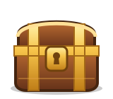

Mira vídeos
Cada segundo que ves de un vídeo nuevo suma monedas. Desliza hacia arriba para pasar al siguiente.
WatchEarn es una app gratuita de vídeos cortos y minijuegos. Ganas monedas al ver vídeos, completar tareas y abrir cofres, y puedes canjearlas por dinero por PayPal o Bizum.
Cada segundo que ves de un vídeo nuevo suma monedas. Desliza hacia arriba para pasar al siguiente.

Ruleta, rasca, memoria y reflejos: tres partidas gratis al día en cada juego.
Revisión manualRevisamos cada solicitud antes de pagar. Podemos pedirte que acredites tu identidad, edad y residencia.
Tu saldo vive en este dispositivoSi borras los datos del navegador o de la app, la desinstalas o cambias de dispositivo, se pierde y no podemos recuperarlo.
Solo mayores de 18 añosTodo es gratuito: sin compras ni apuestas. Las trampas anulan las monedas.
La app para Android muestra anuncios de AppLovin: vídeos con recompensa, que son opcionales, y anuncios entre vídeos. Pulsar un anuncio no da monedas.
Para mostrarlos, AppLovin recibe datos del dispositivo, como el identificador de publicidad y tu interacción con los anuncios. Puedes rechazar los anuncios personalizados al abrir la app o después, en Ajustes → Anuncios personalizados.
No hay cuentas ni registro: WatchEarn guarda tu saldo y tu actividad solo en tu dispositivo. Para borrarlos, usa Ajustes → Borrar mis datos o desinstala la app.
Si nos has escrito, por ejemplo para pedir una retirada, puedes pedirnos por correo una copia de esos datos o que los borremos, salvo los que la ley nos obligue a conservar.
Escríbenos para cualquier duda, problema con la app o retirada.